重要提醒
- 不要透露密碼或一次性驗證碼（OTP），任何人索取都視為詐騙。
- 確認網址為
microsoft.com或官方登入服務（例如login.microsoftonline.com），避免使用不明短網址。 - 建議啟用兩步驟驗證（2FA），並妥善保存備用代碼。
- 盡量在自己的裝置上操作；若使用公用電腦，完成後務必登出並清除瀏覽資料。
- 本頁僅提供操作步驟與示意圖，不會蒐集任何帳號或密碼。
購買前請先登入
https://www.minecraft.net/zh-hant
確認帳戶沒問題，再進行後續步驟。
步驟一
點擊 https://www.microsoft.com/ 前往微軟官網
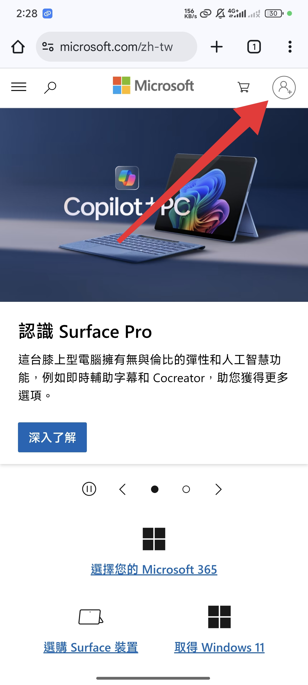
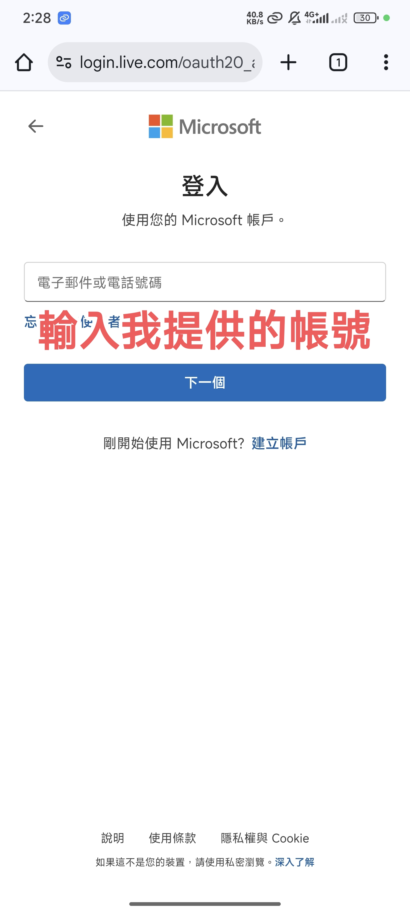
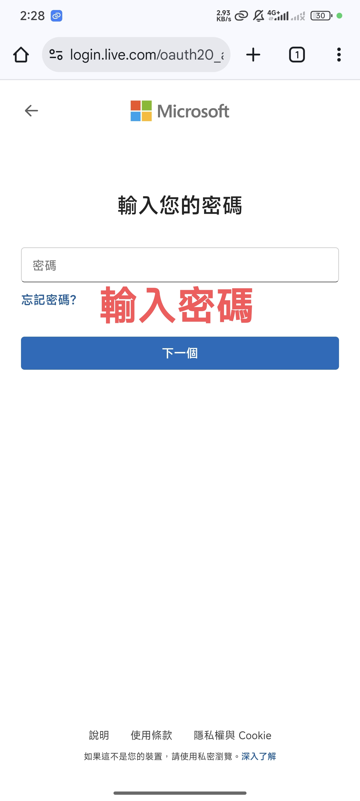
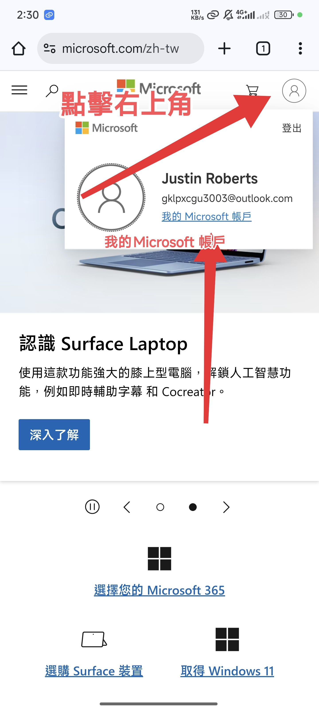
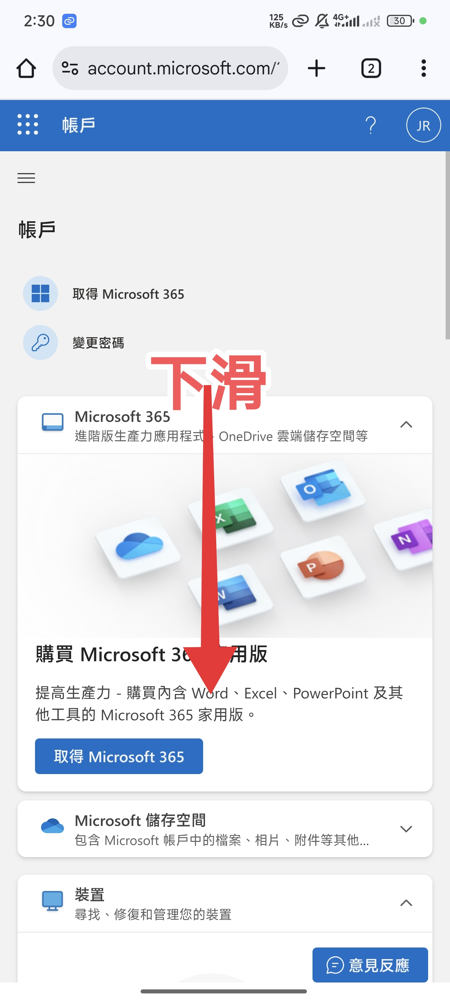
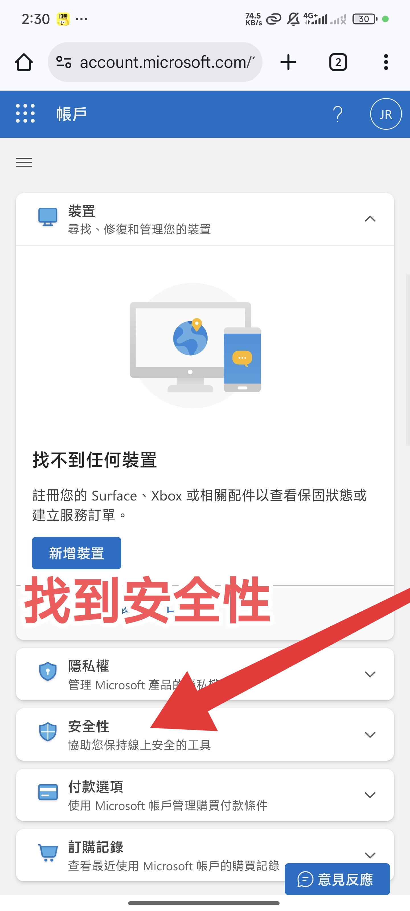
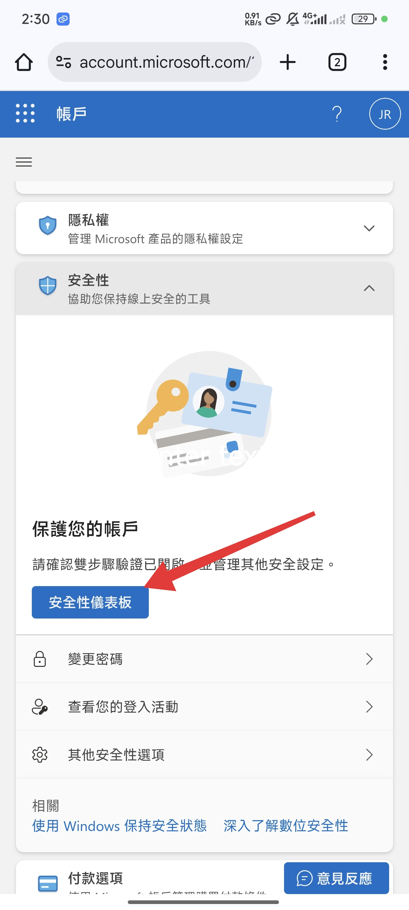
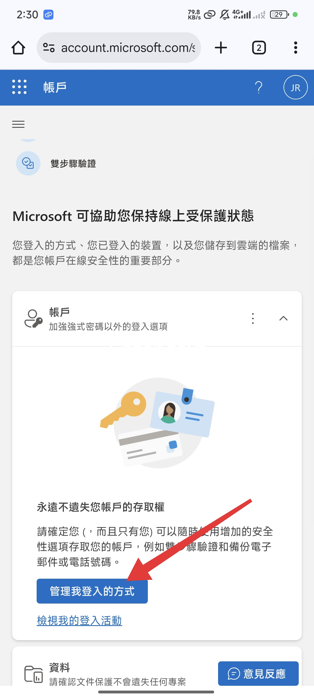
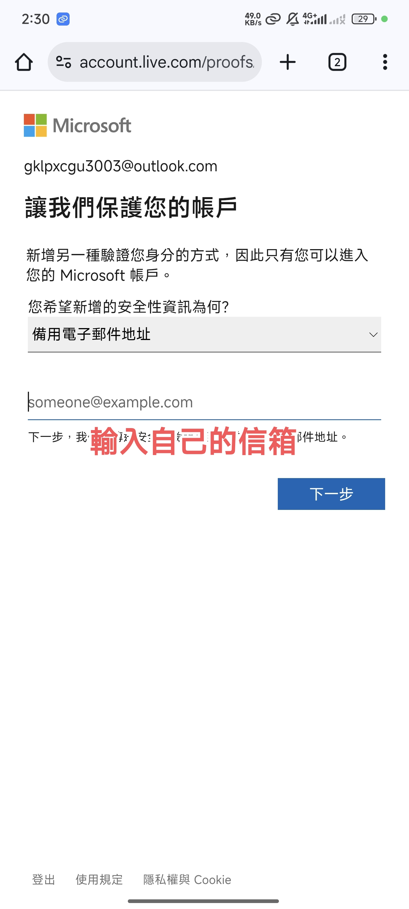
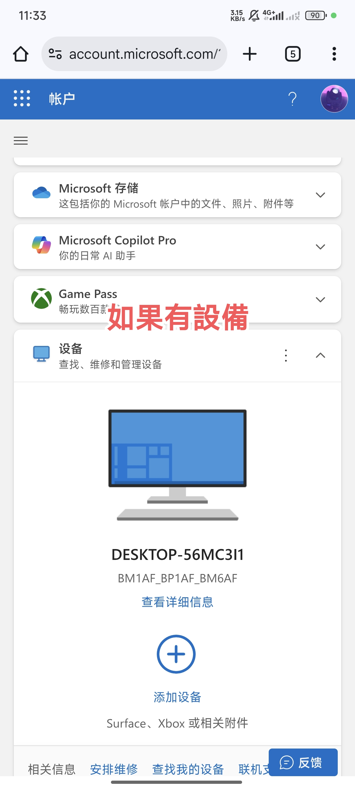
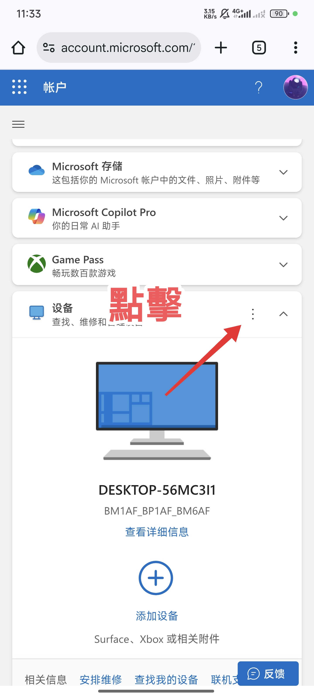
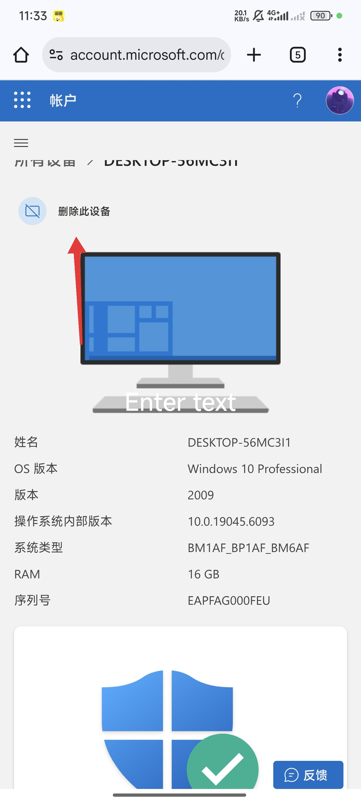
步驟二
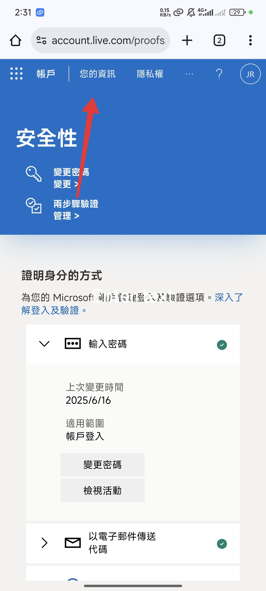
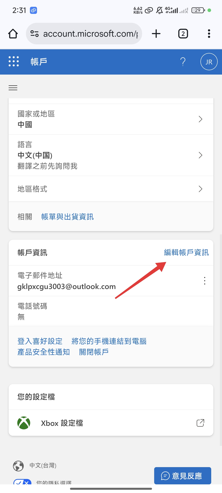
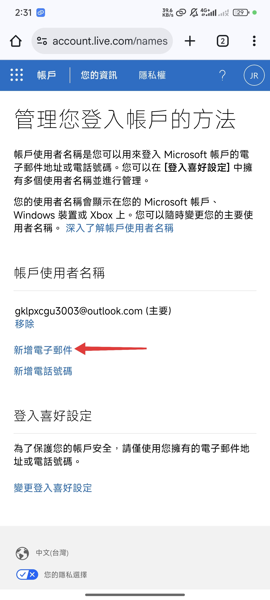
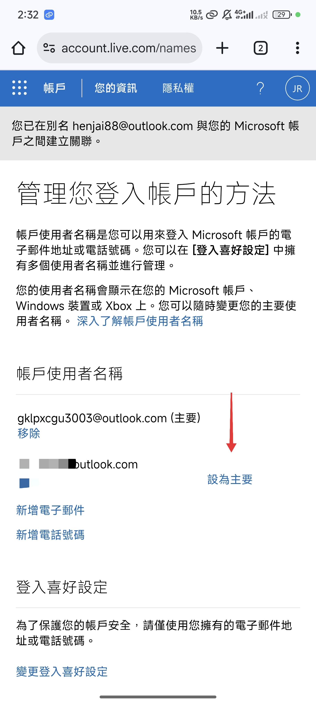
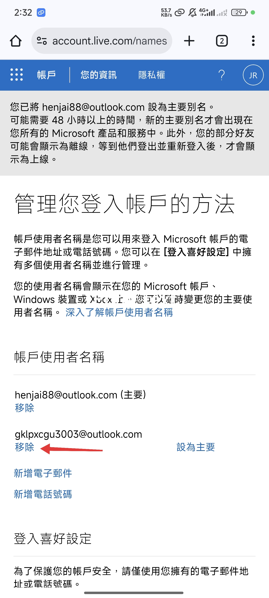
步驟一和步驟二都必須完成，帳號被盜不負責
完成！
常見錯誤／排解
- 收不到驗證碼：檢查簡訊攔截、Email 垃圾信匣；必要時改用驗證器 App。
- 顯示「帳戶不存在」：確認輸入的電郵是否為 Microsoft 帳戶（Outlook/Hotmail/Live）。
- 重設密碼失敗：需事先設定備援電郵／電話；若沒有，依指示完成身分證明流程。
- 異常登入通知：立刻更改密碼並檢查「最近活動」，撤銷可疑裝置的登入狀態。
- 更改完成後帳戶,就完全屬於自己,帳號安全需要自己負責本店不會做任何保障